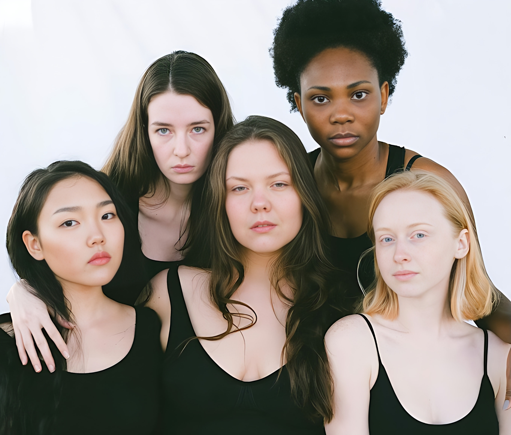
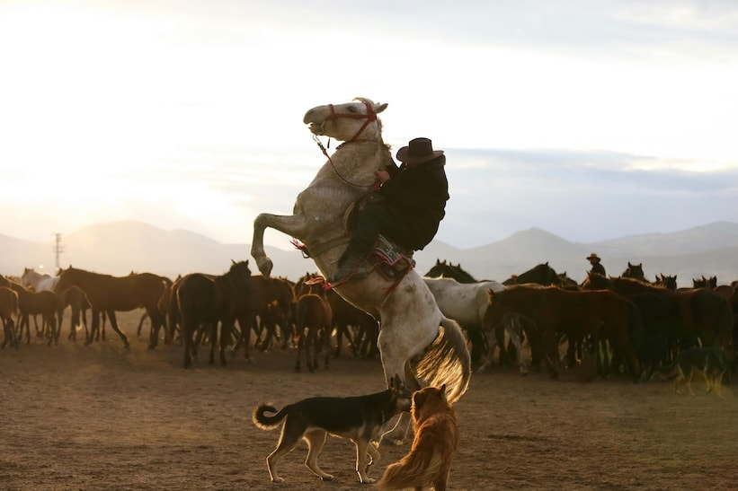
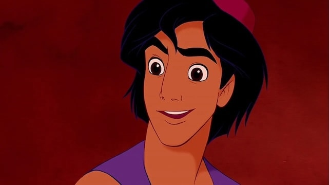

UpScale: Enhance and Upscale Your Media
UpScale is the perfect solution for enhancing and upscaling your photos and videos with professional quality. Our advanced AI technology delivers stunning results while keeping your data completely private.
Powerful upscaling for photos and videos
Intelligent face restoration technology
100% on-device processing for complete privacy
No internet connection required
See the Difference

Before
After

